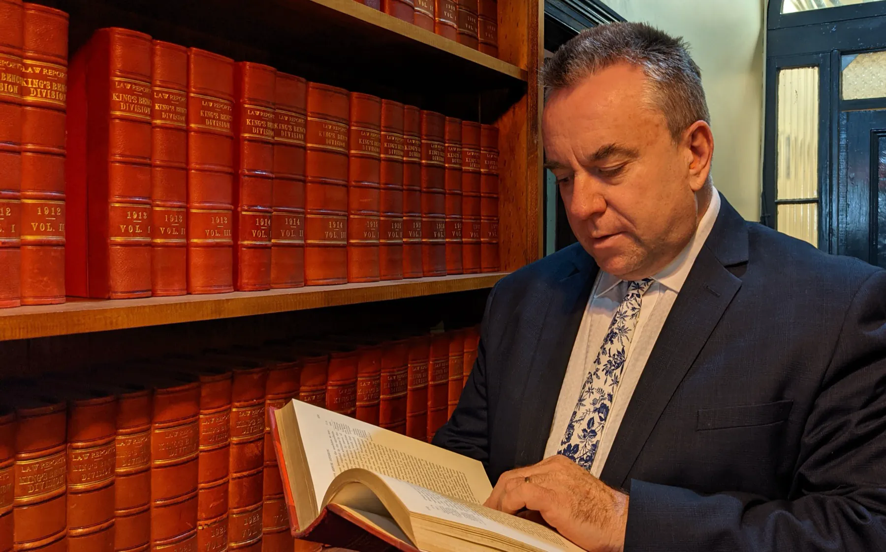

PaulCott
Principal lawyer at Law on Lydiard, and host of the Lydiard Law podcast.
Call Paul0412 483 758
Principal lawyer
Paul Donald Cott · 0412 483 758 · paul@lawonlydiard.com.au
Paul has been helping employers and employees enforce their rights for more than 15 years, and runs Law on Lydiard from 46 Lydiard Street South, Ballarat.
The firm is known in its home town, and in the wider community, for a responsive and professional legal service, and it is building up a good number of reviews on Google and Facebook. Members of courts and tribunals know Paul as a straight shooter; his clients, often going through significant challenges, know him for listening.
Alongside the practice he writes about building law for Sourceable and hosts Lydiard Law, a podcast of free legal information.
Lydiard Law
Paul unpacks the legal problems that affect many of us in business and in life: building contracts, insolvency and bankruptcy, business and employment, property and VCAT matters, Wills and probate. Plain questions and answers, so you get a general idea of where you might stand and what your options are.
- 01Paul Cott’s journey in law55:55
- 02Misleading statements and conduct12:51
- 03Rights of all employees13:44
- 04The Court and Tribunal System in Australia15:51
- 05What happens if staff are underpaid?15:12
- 06Workplace Redundancy – the ins & outs13:36
- 07What exactly is a casual employee?12:44
- 08The ins and outs of unfair dismissal16:37